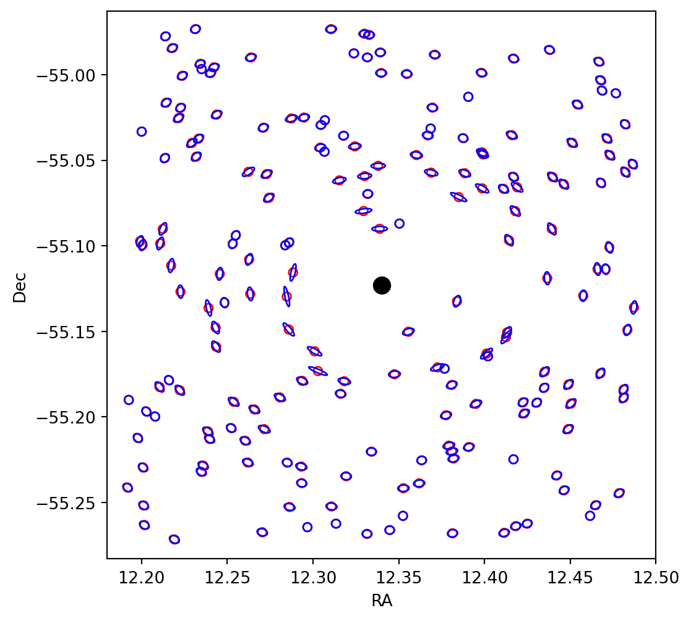
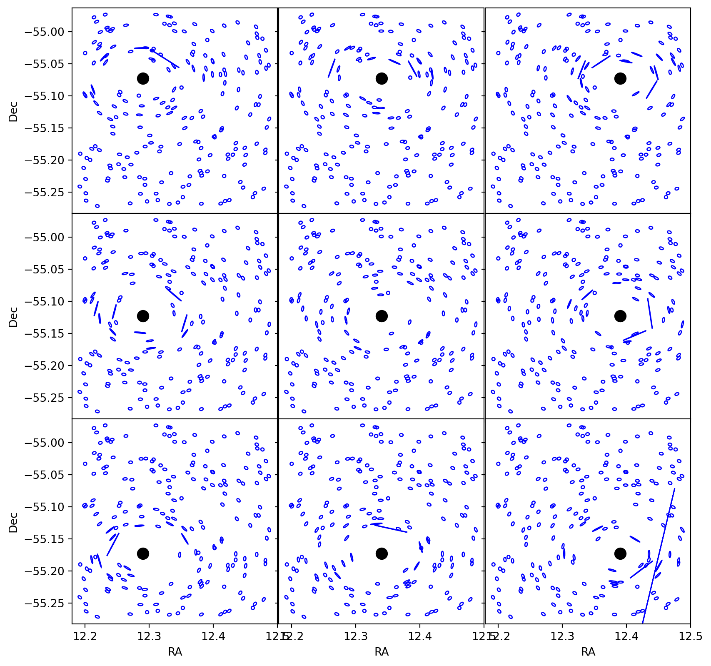
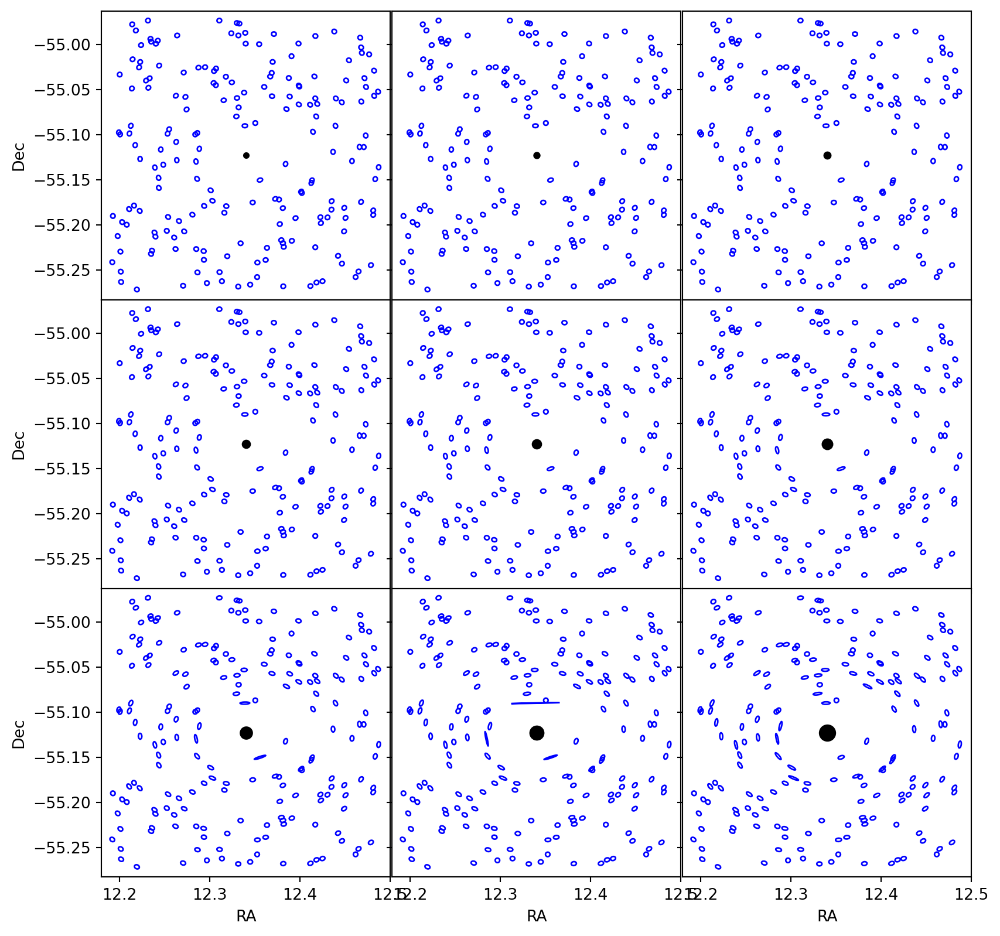

def doc_theme():
return theme_minimal() + theme(
panel_grid_minor=element_line(color="gray", linetype="--"),
)Simulating Galaxy Shapes with NumCosmo Cluster Weak Lensing Tools
Purpose
This document serves as a guide for utilizing NumCosmo’s cluster weak lensing tools to simulate the weak lensing signal produced by galaxy clusters. In this tutorial, we demonstrate how to generate mock weak lensing data for galaxy clusters, focusing on simulating galaxy shapes with varying cluster positions and masses using NumCosmo. These simulations provide insights into how weak lensing signal changes with cluster properties and can be used to test the performance of weak lensing analysis methods.
Defining Theoretical Models
Cosmological Model
To begin, we define a cosmological model using NumCosmo’s background cosmology models. We also create an Nc.Distance object to compute the cosmological distances required for the weak lensing analysis.
For this example, we consider a Lambda Cold Dark Matter (\(\Lambda\)CDM) cosmology with the following parameters:
- \(\Omega_{c0} = 0.25\): Cold dark matter density parameter at present
- \(\Omega_{b0} = 0.05\): Baryon density parameter at present
- \(\Omega_{k0} = 0\): Curvature density parameter at present
- \(H_0 = 70.0\): Hubble constant in km/s/Mpc
import numpy as np
import pandas as pd
import matplotlib.pyplot as plt
from numcosmo_py import Nc, Ncm
from numcosmo_py.plotting.tools import add_ellipse_from_ellipticity
Ncm.cfg_init()
Omega_b = 0.05
Omega_c = 0.25
Omega_k = 0.0
H0 = 70.0
# Create a cosmology object
cosmo = Nc.HICosmoDEXcdm.new()
cosmo.omega_x2omega_k()
cosmo["Omegab"] = Omega_b
cosmo["Omegac"] = Omega_c
cosmo["Omegak"] = Omega_k
cosmo["H0"] = H0
cosmo["w"] = -1.0
dist = Nc.Distance.new(100.0)
dist.prepare(cosmo)Cluster Profile Model
Next, we define a model for the cluster density profile. For this example, we consider the NFW (Navarro-Frenk-White) profile, a widely used model for the density profile of galaxy clusters. Since we are taking into account the miscentering effect, we also need to define a model for the cluster position. Additionally, we create an Nc.WLSurfaceMassDensity object to compute the shear produced by the cluster.
For our simulation, we define the following parameters:
Nc.HaloDensityProfile:- Halo density profile: NFW
- Mass overdensity: \(\Delta = 200\)
- Mass definition: Critical density
- Mass of the cluster: \(M = 2.0 \times 10^{16} M_\odot\)
- Concentration parameter: \(c = 4.0\)
Nc.HaloPosition:- Right ascension (RA): \(12.34^\circ\)
- Declination (Dec): \(-55.123^\circ\)
- Redshift of the cluster: \(z = 0.2\)
We choose a cluster with a halo mass that is an exceptionally large mass, selected deliberately to make the lensing effect very visible in our simulations.
The cluster’s right ascension (RA) and declination (Dec) are set to \(12.34^\circ\) and \(-55.123^\circ\), respectively.
# Set parameters
mass_delta = 200
cluster_M = 2.0e16
cluster_c = 4.0
cluster_z = 0.2
cluster_ra, cluster_dec = 12.34, -55.123
mass_summary = Nc.HaloMCParam.new(Nc.HaloMassSummaryMassDef.CRITICAL, mass_delta)
density_profile = Nc.HaloDensityProfileNFW.new(mass_summary)
surface_mass_density = Nc.WLSurfaceMassDensity.new(dist)
halo_position = Nc.HaloPosition.new(dist)
mass_summary["cDelta"] = cluster_c
mass_summary["log10MDelta"] = np.log10(cluster_M)
halo_position["ra"] = cluster_ra
halo_position["dec"] = cluster_dec
halo_position["z"] = cluster_z
surface_mass_density.prepare(cosmo)
halo_position.prepare(cosmo)Galaxy Distribution Model
We also need to define a model for the galaxy distribution around the clusters. For this example, we consider a flat distribution in the sky position, meaning that galaxies are evenly distributed across the angular range.
For the redshift distribution, we use the LSST Science Requirements Document (SRD) true redshift distribution, assuming a Gaussian distribution for the observed redshifts to account for measurement uncertainties. Additionally, we define a Gaussian model for the galaxy shape distribution to represent the intrinsic ellipticities of the galaxies.
To ensure a stronger lensing signal, we set the following redshift range to focusing on galaxies that are more likely to exhibit a significant shear effect due to the cluster’s mass. The angular position range for galaxies is set to be within \(0.15^\circ\) from the cluster’s center. We also set the intrinsic ellipticity dispersion and ellipticity measurement error to \(1.0 \times 10^{-8}\). By making these errors very small, all galaxies are assumed to have the same shape (a disc) and size. This uniformity ensures that the lensing effect is highly visible in our simulations. The specific values are as follows:
- Redshift range: \(z = 0.7\) to \(z = 0.9\)
- Angular position range:
- Right ascension (RA): \([12.19^\circ, 12.49^\circ]\)
- Declination (Dec): \([-55.273^\circ, -54.973^\circ]\)
- Galaxy shape distribution:
- Intrinsic ellipticity dispersion: \(1.0 \times 10^{-8}\)
- Ellipticity measurement error: \(1.0 \times 10^{-8}\)
galaxy_true_z_min = 0.7
galaxy_true_z_max = 0.9
galaxies_ang_dist = 0.15
galaxies_ra0 = cluster_ra - galaxies_ang_dist
galaxies_ra1 = cluster_ra + galaxies_ang_dist
galaxies_dec0 = cluster_dec - galaxies_ang_dist
galaxies_dec1 = cluster_dec + galaxies_ang_dist
galaxy_shape_e_rms = 1.0e-8
galaxy_shape_e_sigma = 1.0e-8
p_dist = Nc.GalaxySDPositionFlat.new(
galaxies_ra0, galaxies_ra1, galaxies_dec0, galaxies_dec1
)
z_true = Nc.GalaxySDTrueRedshiftLSSTSRD.new()
z_dist = Nc.GalaxySDObsRedshiftGauss.new(z_true)
s_dist = Nc.GalaxySDShapeGauss.new()
s_dist["e-rms"] = galaxy_shape_e_rms
passWeak Lensing Model
Finally, we define the likelihood model for the weak lensing analysis.
The Nc.DataClusterWL object is used to create a new cluster model, specifying the distribution of the source galaxies, the redshift distribution, and the position distribution. We then set the minimum and maximum radii for the weak lensing analysis to focus on the region around the cluster where the lensing effect is most significant and exclude galaxies that are too close to the cluster center.
min_r, max_r = 0.3, 3.0
cluster = Nc.DataClusterWL.new()
cluster.set_cut(min_r, max_r)Model-Set
We create an Nc.MSet object to encapsulate the models defined above. The MSet object serves as the main container for all models in a given analysis. We add the cosmological model, the cluster profile and position models, the galaxy distribution models, and the weak lensing model to the model set.
This comprehensive model set allows us to manage and run simulations, ensuring that all components interact correctly to produce the desired weak lensing data.
mset = Ncm.MSet.new_array(
[
cosmo,
density_profile,
surface_mass_density,
halo_position,
s_dist,
z_dist,
p_dist,
]
)
mset.pretty_log()#----------------------------------------------------------------------------------
# Model[03000]:
# - NcHICosmo : XCDM - Constant EOS
#----------------------------------------------------------------------------------
# Model parameters
# - H0[00]: 70 [FIXED]
# - Omegac[01]: 0.25 [FIXED]
# - Omegak[02]: 0 [FIXED]
# - Tgamma0[03]: 2.7245 [FIXED]
# - Yp[04]: 0.24 [FIXED]
# - ENnu[05]: 3.046 [FIXED]
# - Omegab[06]: 0.05 [FIXED]
# - w[07]: -1 [FIXED]
#----------------------------------------------------------------------------------
# Model[06000]:
# - NcHaloPosition : Halo position
#----------------------------------------------------------------------------------
# Model parameters
# - ra[00]: 12.34 [FIXED]
# - dec[01]: -55.123 [FIXED]
# - z[02]: 0.2 [FIXED]
#----------------------------------------------------------------------------------
# Model[07000]:
# - NcHaloDensityProfile : NFW Density Profile
#----------------------------------------------------------------------------------
# Model parameters
#----------------------------------------------------------------------------------
# Model[08000]:
# - NcHaloMassSummary : Mass and concentration as parameters
#----------------------------------------------------------------------------------
# Model parameters
# - cDelta[00]: 4 [FIXED]
# - log10MDelta[01]: 16.301029995664 [FIXED]
#----------------------------------------------------------------------------------
# Model[12000]:
# - NcWLSurfaceMassDensity : WL Surface Mass Density
#----------------------------------------------------------------------------------
# Model parameters
# - pcc[00]: 0.8 [FIXED]
# - Roff[01]: 1 [FIXED]
#----------------------------------------------------------------------------------
# Model[15000]:
# - NcGalaxySDPosition : Flat Galaxy Distribution
#----------------------------------------------------------------------------------
# Model parameters
#----------------------------------------------------------------------------------
# Model[16000]:
# - NcGalaxySDObsRedshift : Gaussian Observed Redshift
#----------------------------------------------------------------------------------
# Model parameters
#----------------------------------------------------------------------------------
# Model[17000]:
# - NcGalaxySDTrueRedshift : LSST SRD Galaxy Distribution
#----------------------------------------------------------------------------------
# Model parameters
# - alpha[00]: 0.78 [FIXED]
# - beta[01]: 2 [FIXED]
# - z0[02]: 0.13 [FIXED]
#----------------------------------------------------------------------------------
# Model[18000]:
# - NcGalaxySDShape : Gaussian galaxy shape distribution
#----------------------------------------------------------------------------------
# Model parameters
# - e-rms[00]: 1e-08 [FIXED]Generating Mock Data
To generate mock weak lensing data, we use the Nc.DataClusterWL object created earlier. We set the number of galaxies to \(200\) to focus on a manageable subset of the data for our example.
To ensure reproducibility, we create a random number generator with the seed 1235.
We specify the coordinate system for the observed galaxy positions as EUCLIDEAN, which corresponds to right ascension and declination in degrees. The mock data, consisting of \(200\) galaxies around the cluster, is then generated and stored in the cluster object.
seed = 1235
n_galaxies = 200
sigma_z = 0.03
rng = Ncm.RNG.seeded_new("mt19937", seed)
z_data = Nc.GalaxySDObsRedshiftData.new(z_dist)
p_data = Nc.GalaxySDPositionData.new(p_dist, z_data)
s_data = Nc.GalaxySDShapeData.new(s_dist, p_data)
obs = Nc.GalaxyWLObs.new(
Nc.GalaxyWLObsCoord.EUCLIDEAN, n_galaxies, list(s_data.required_columns())
)
for i in range(n_galaxies):
z_dist.gen(mset, z_data, sigma_z, rng)
p_dist.gen(mset, p_data, rng)
s_dist.gen(
mset,
s_data,
galaxy_shape_e_sigma,
galaxy_shape_e_sigma,
Nc.GalaxyWLObsCoord.EUCLIDEAN,
rng,
)
s_data.write_row(obs, i)
cluster.set_obs(obs)The mock data can be retrieved from the cluster object and used for further analysis. You can access the observed galaxy positions, redshifts, and shapes using the appropriate methods provided by the Nc.GalaxyWLObs class.
These data points will allow you to analyze the weak lensing effects, test models, and explore the properties of the simulated galaxy cluster.
To facilitate visualization and analysis, we create a DataFrame, obs_df, to store the observed galaxy data. This DataFrame includes the positions, redshifts, and shapes of the galaxies.
obs = cluster.peek_obs()
columns = obs.peek_columns()
obs_dict = {}
for col in columns:
obs_dict[col] = []
for i in range(int(obs.len())):
obs_dict[col].append(obs.get(col, i))
obs_df = pd.DataFrame(obs_dict)
obs_df| epsilon_int_1 | epsilon_int_2 | epsilon_obs_1 | epsilon_obs_2 | sigma_obs_1 | sigma_obs_2 | ra | dec | z | zp | sigma_z | |
|---|---|---|---|---|---|---|---|---|---|---|---|
| 0 | 1.475444e-08 | -6.676072e-09 | 0.186870 | 0.137763 | 1.000000e-08 | 1.000000e-08 | 12.263752 | -54.989918 | 1.725525 | 1.813979 | 0.03 |
| 1 | -1.915601e-09 | 1.515375e-09 | 0.435403 | 0.077971 | 1.000000e-08 | 1.000000e-08 | 12.330111 | -55.059241 | 0.990805 | 1.038027 | 0.03 |
| 2 | 4.842633e-09 | 2.904124e-09 | 0.024613 | -0.170945 | 1.000000e-08 | 1.000000e-08 | 12.482022 | -55.028956 | 0.536501 | 0.556946 | 0.03 |
| 3 | -1.004300e-08 | 9.824479e-09 | 0.125443 | 0.170308 | 1.000000e-08 | 1.000000e-08 | 12.218000 | -54.984434 | 1.818791 | 1.820460 | 0.03 |
| 4 | -8.548621e-10 | 9.759948e-09 | -0.270044 | -0.303476 | 1.000000e-08 | 1.000000e-08 | 12.243192 | -55.147787 | 0.749202 | 0.627251 | 0.03 |
| ... | ... | ... | ... | ... | ... | ... | ... | ... | ... | ... | ... |
| 195 | -2.272049e-09 | -4.595147e-09 | 0.089207 | 0.003349 | 1.000000e-08 | 1.000000e-08 | 12.344713 | -55.266126 | 0.326263 | 0.315771 | 0.03 |
| 196 | 7.148487e-09 | 1.984086e-08 | 0.032855 | 0.306816 | 1.000000e-08 | 1.000000e-08 | 12.320971 | -55.110887 | 0.530175 | 0.522497 | 0.03 |
| 197 | 3.035583e-09 | -2.966990e-09 | 0.125474 | 0.147294 | 1.000000e-08 | 1.000000e-08 | 12.240261 | -54.999072 | 0.772935 | 0.798747 | 0.03 |
| 198 | 3.556383e-09 | 7.546131e-09 | -0.028773 | -0.322288 | 1.000000e-08 | 1.000000e-08 | 12.222298 | -55.184411 | 1.141341 | 1.193811 | 0.03 |
| 199 | 8.706065e-09 | 1.192715e-08 | 0.138104 | -0.009616 | 1.000000e-08 | 1.000000e-08 | 12.334068 | -55.220319 | 0.357620 | 0.363656 | 0.03 |
200 rows × 11 columns
However, the DataFrame contains all generated galaxies, including those that are too close to the cluster center and may not be suitable for the analysis. We filter out these galaxies based on their distance from the cluster center to mimic what will be done in a real analysis. We then create a new DataFrame with the filtered data.
include_galaxies = [
halo_position.projected_radius_from_ra_dec(cosmo, gal_ra, gal_dec) > min_r
for gal_ra, gal_dec in zip(obs_df["ra"], obs_df["dec"])
]
obs_df = obs_df[include_galaxies]We can plot the galaxy distribution around the cluster to visualize the mock data. To represent the galaxy shapes, we use ellipses. For visualization purposes, we choose all galaxies to have the same area, which allows us to use the ellipticity to calculate the major and minor axes of each ellipse.
By plotting these ellipses, we can visually assess the impact of the weak lensing effect and better understand the distribution and shapes of the galaxies in our simulation.
Code
fig, ax = plt.subplots(figsize=(6, 6))
add_ellipse_from_ellipticity(
ax,
obs_df["ra"],
obs_df["dec"],
obs_df["epsilon_int_1"],
obs_df["epsilon_int_2"],
ellipse_scale=0.005,
edgecolor="red",
)
add_ellipse_from_ellipticity(
ax,
obs_df["ra"],
obs_df["dec"],
obs_df["epsilon_obs_1"],
obs_df["epsilon_obs_2"],
ellipse_scale=0.005,
edgecolor="blue",
)
ax.scatter(
[halo_position.props.ra],
[halo_position.props.dec],
color="black",
marker="o",
s=100,
)
angle_border = 0.01
ax.set_xlabel("RA")
ax.set_ylabel("Dec")
ax.set_xlim(galaxies_ra0 - angle_border, galaxies_ra1 + angle_border)
ax.set_ylim(galaxies_dec0 - angle_border, galaxies_dec1 + angle_border)
ax.set_aspect("equal")
plt.show()
Varying the Cluster Mass and Position
We define a function to generate the galaxy distribution based on variations in the halo’s position and mass. This allows us to explore how changes in these properties affect the weak lensing signal and the overall galaxy distribution around the cluster.
Code
def gen_galaxies(halo_ra: float, halo_dec: float, halo_mass: float) -> pd.DataFrame:
rng = Ncm.RNG.seeded_new("mt19937", 1235)
halo_position["ra"] = halo_ra
halo_position["dec"] = halo_dec
mass_summary["log10MDelta"] = np.log10(halo_mass)
surface_mass_density.prepare(cosmo)
halo_position.prepare(cosmo)
obs = Nc.GalaxyWLObs.new(
Nc.GalaxyWLObsCoord.EUCLIDEAN, n_galaxies, list(s_data.required_columns())
)
for i in range(n_galaxies):
z_dist.gen(mset, z_data, sigma_z, rng)
p_dist.gen(mset, p_data, rng)
s_dist.gen(
mset,
s_data,
galaxy_shape_e_sigma,
galaxy_shape_e_sigma,
Nc.GalaxyWLObsCoord.EUCLIDEAN,
rng,
)
s_data.write_row(obs, i)
columns = obs.peek_columns()
obs_dict = {}
for col in columns:
obs_dict[col] = []
for i in range(int(obs.len())):
obs_dict[col].append(obs.get(col, i))
obs_df = pd.DataFrame(obs_dict)
include_galaxies = [
halo_position.projected_radius_from_ra_dec(cosmo, gal_ra, gal_dec) > min_r
for gal_ra, gal_dec in zip(obs_df["ra"], obs_df["dec"])
]
return obs_df[include_galaxies]Varying Halo Position
We can generate mock data for different halo positions and visualize the resulting galaxy distribution around each halo.
We plot the galaxy distribution for nine different halo positions. The central panel displays the true original halo position, while the other panels show the same cluster shifted in right ascension and declination by a constant factor of \(0.05\) degrees, respectively.
Code
ra_shifts = [-0.05, 0.0, 0.05]
dec_shifts = [0.05, 0.0, -0.05]
fig, axes = plt.subplots(
3,
3,
figsize=(10, 10),
sharex=True,
sharey=True,
gridspec_kw={"wspace": 0, "hspace": 0},
)
for i, ra_shift in enumerate(ra_shifts):
for j, dec_shift in enumerate(dec_shifts):
obs_df = gen_galaxies(cluster_ra + ra_shift, cluster_dec + dec_shift, cluster_M)
ax = axes[j, i]
add_ellipse_from_ellipticity(
ax,
obs_df["ra"],
obs_df["dec"],
obs_df["epsilon_obs_1"],
obs_df["epsilon_obs_2"],
ellipse_scale=0.005,
edgecolor="blue",
)
ax.scatter(
[halo_position.props.ra],
[halo_position.props.dec],
color="black",
marker="o",
s=100,
)
if j == 2:
ax.set_xlabel("RA")
if i == 0:
ax.set_ylabel("Dec")
ax.set_xlim(galaxies_ra0 - angle_border, galaxies_ra1 + angle_border)
ax.set_ylim(galaxies_dec0 - angle_border, galaxies_dec1 + angle_border)
ax.set_aspect("equal")
plt.show()
Varying Halo Mass
We can also generate mock data for different halo masses and visualize the resulting galaxy distribution around the halo.
We plot the galaxy distribution for nine different halo masses. The panels display the galaxy distribution with cluster masses varying from \(10^{-1}\) to \(10^{0}\) times the original cluster mass.
Code
mass_shifts = np.geomspace(10.0 ** (-1.0), 1.0, 9)
fig, axes = plt.subplots(
3,
3,
figsize=(10, 10),
sharex=True,
sharey=True,
gridspec_kw={"wspace": 0, "hspace": 0},
)
for i, mass_shift in enumerate(mass_shifts):
obs_df = gen_galaxies(cluster_ra, cluster_dec, cluster_M * mass_shift)
ax = axes[i // 3, i % 3]
add_ellipse_from_ellipticity(
ax,
obs_df["ra"],
obs_df["dec"],
obs_df["epsilon_obs_1"],
obs_df["epsilon_obs_2"],
ellipse_scale=0.005,
edgecolor="blue",
)
ax.scatter(
[halo_position.props.ra],
[halo_position.props.dec],
color="black",
marker="o",
s=100 * mass_shift,
)
if i // 3 == 2:
ax.set_xlabel("RA")
if i % 3 == 0:
ax.set_ylabel("Dec")
ax.set_xlim(galaxies_ra0 - angle_border, galaxies_ra1 + angle_border)
ax.set_ylim(galaxies_dec0 - angle_border, galaxies_dec1 + angle_border)
ax.set_aspect("equal")
plt.show()
Conclusion
In this tutorial, we demonstrated how to simulate galaxy shapes around a galaxy cluster using NumCosmo’s cluster weak lensing tools. By defining theoretical models for cosmology, cluster profile, galaxy distribution, and weak lensing likelihood, we generated mock weak lensing data for a galaxy cluster and explored the impact of varying the cluster’s position and mass on the galaxy distribution.
These simulations used very high-mass clusters and minimal galaxy shape errors to make the lensing effect highly visible. In a real analysis, clusters would typically have much lower masses, and galaxy shape errors would be larger, resulting in a less pronounced lensing effect. Consequently, a more statistical approach is usually necessary to analyze the data and extract the weak lensing signal. This topic is covered in more detail the analysis tutorials.